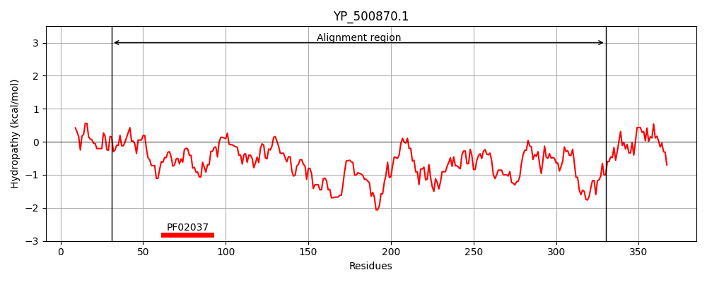
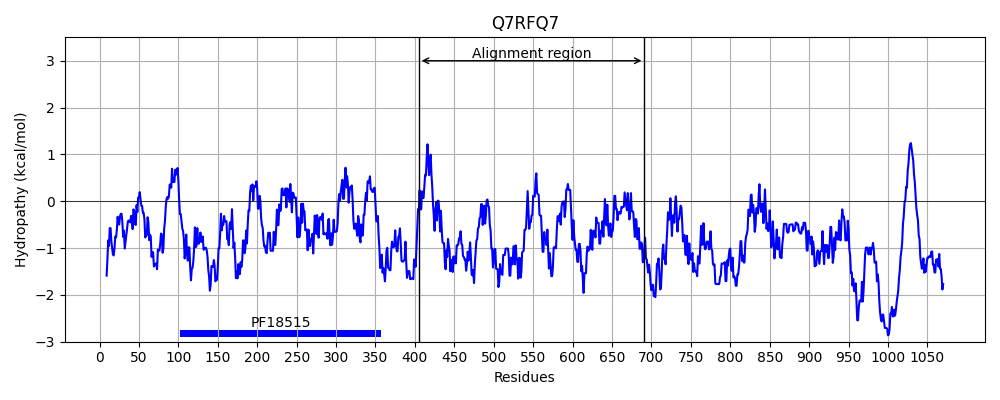
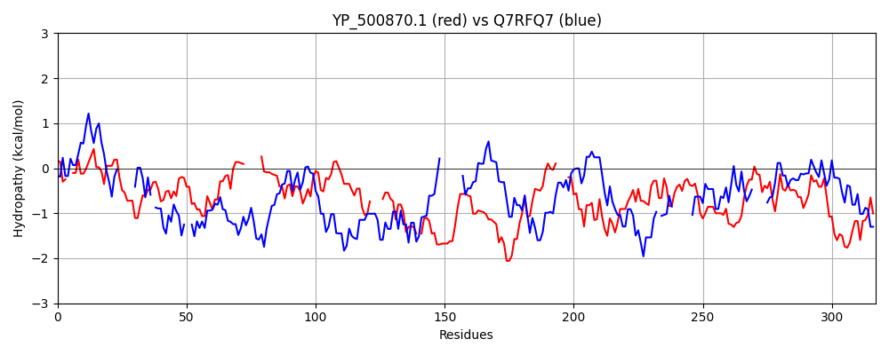

Hit Accession: Q7RFQ7
Hit TCID: 1.C.105.2.1
Hit Description: gnl|BL_ORD_ID|15502 gnl|TC-DB|Q7RFQ7|1.C.105.2.1 235 kDa rhoptry protein (Fragment) OS=Plasmodium yoelii yoelii GN=PY04647 PE=4 SV=1
Mach Len: 317
e:0.000146
Query TMS Count : 0
Hit TMS Count: 0
TMS-Overlap Score: 0.000000
Predicted Substrates:CHEBI:25367;molecule
BLAST Alignment:
Score: 101 , Bit scores: 43 bits, E-value: 1.5e-04, Alignment length: 317, Percentage identity: 22
Query: 31 NNDV--QIMNSIKKLIEAELLTTTNDFEVSIYKKTRPELQSILKSFGIKTTGNKPDLIKRIDDNFHIINNLDL------PYVYIPIKKGEEILKKTEYLTSFIQSYGEISLERAYYLVENYI----DENCDDKVAEIYKF-EFQRKYDNGEFDFNHGYNFELNMLIDHYKRDVKDYDNARKYSNIYLYFGLRDF----LKKLMSNYSYYDSKGNIDLNEIQNDLNRFINSSASGMYERLIYNENLSNNIMFELFKKDTQDYSDLEEQLIEKFINYVVSNVKKESRSNTLIELSKILENGYTIDKEEFKKEDDYLSKY 330
NND+ QI+ IKKL + L T IY P + I KT NK DL +++D + + K E +L +T QS+ + +++ Y I +N ++K E+ K E ++ +N Y ++N+L++ +V D+ N + N + ++F ++ L++ S ++ I+ + + + + S Y+++ NNI F+ K + ++ +E L+E +++ +K + + + +LS IL + TIDK D Y Y
Sbjct: 405 NNDLIPQIVLLIKKLEDLIKLMET------IYNSDTP-ISEIQTEINNKT--NKVDLNEKLDGFNSALEEAKTWKTKRKSTISTLKDKYELVLNLQSQITKLCQSFNKKDMQQKYIQESKNILKMKVKNINEKKKELEKLIELKKDIEN--------YINQINILLNDSLYEVVDFANKKNKINDDIKLEFKNFYNDGVENLVAECSTLINENMIEAAQNDEQIKKHLGELDS-KYDKI-------NNITFDEISKVLNNVNNKKEALLE-----LINEIKTYTYYHMINDLSSILNSVQTIDKHLQSSIDSYYGLY 691 | Protein Hydropathy Plots: |
|---|
|  |  |
Pairwise Alignment-Hydropathy Plot:
|
|---|
|  |